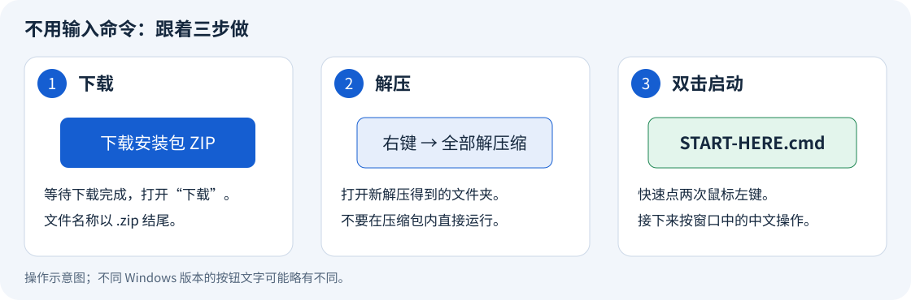
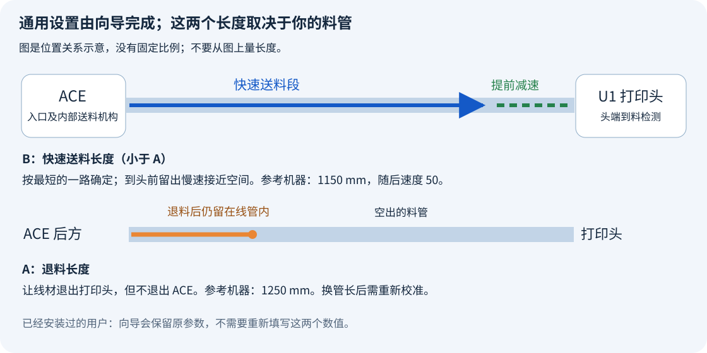
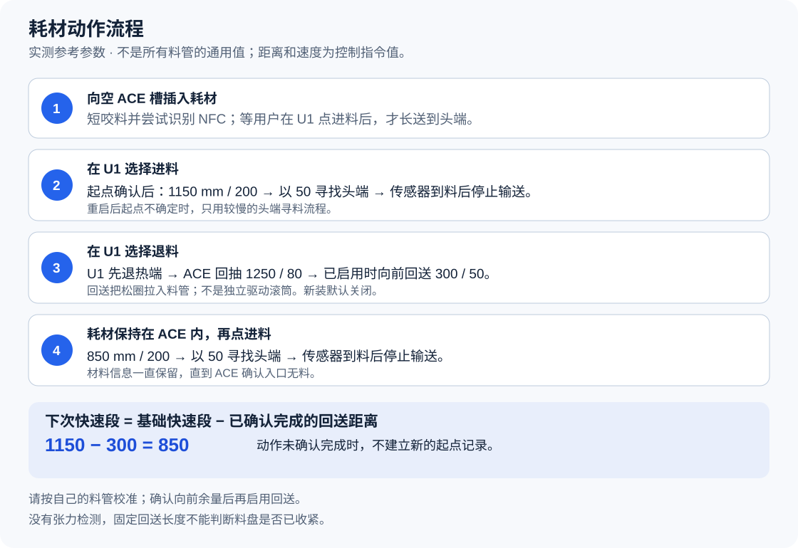

安装不需要编程。
双击 START-HERE.cmd，选择中文或 English。向导可从准备 U1 固件开始；这里是离线说明，不是安装按钮。
由用户提出需求和完成实机测试，使用 OpenAI Codex 开发代码、工具及文档。使用者无需安装 Codex。
External 已自动处理。向导会设置耗材来源、处理内置读卡服务，并保存备份。不要手动编辑 NFC 密钥文件。
机器还没准备好？从这里展开固件、访问开关、网络、线缆和 ACE 代际；已完成的人可以跳过。
开始安装前：零基础准备指南
这篇说明只处理需要你亲手完成的准备工作。你不需要编程，也不需要编辑 JSON 或 Python 文件。
想减少下载和复制操作：双击 START-HERE.cmd，选择“准备 U1 固件”。
新向导可下载、校验并准备 U 盘，再逐步提示屏幕升级和访问开关；见整合准备流程。
本页保留完整手动替代步骤。
准备完成后，主安装向导会处理文件传输、串口选择、备份、持久化、软件模块和 External 设置。你不需要安装 Codex，也不需要 API 密钥。
一、先确认你手上的设备
| 需要确认的项目 | 怎么看 | 完成标准 |
|---|---|---|
| 打印机 | 查看机身标识或购买记录。 | 型号是 Snapmaker U1。 |
| 送料盒 | 查看 ACE 机身铭牌、包装或购买记录。 | 型号是 ACE Pro 第一代。 |
| 电脑 | 使用能连接家庭网络的 Windows 电脑。 | 能打开网页、下载文件和解压安装包。 |
| USB 连接 | 查看下面的硬件准备章节。 | 已有经过核对的 ACE 第一代专用 USB 连接线。 |
| 四路料管 | 查看 ACE 到 U1 的实际管路。 | 四路连接明确，管路没有压扁或急弯。 |
ACE 2 Pro 不属于本项目当前的适用范围。 不要仅凭“四个料槽”判断代际。看不清型号时，先请卖家或设备提供者确认。
OpenCubic 发布页同时列出了 ACE 1 Pro 和 ACE 2 Pro 的不同固件；两者不能混用。
如果机器正在打印，先等打印结束。接线、安装和更新都不应在打印过程中进行。
二、在打印机屏幕查看版本
- 在 U1 屏幕打开 设置 / Settings。
- 点 关于 / About。
- 点 固件版本 / Firmware Version。
- 记下当前显示的版本。
这个入口也用于后面的本地更新。Snapmaker 官方更新说明
本项目使用的扩展固件版本是 v2.0.0-paxx12-24。
| 你现在的情况 | 下一步 |
|---|---|
明确已安装 v2.0.0-paxx12-24，配置网页也能确认该构建版本 | 跳到第四节，检查访问开关。 |
屏幕只显示原厂 2.0.0，不知道有没有扩展固件 | 不能只凭 2.0.0 判断；按下一节准备准确的扩展版本。 |
| 使用其他扩展版本或自己修改过的系统 | 先保留原配置，再按对应维护流程迁移；不要为了安装本项目直接覆盖。 |
主安装向导会再次核对版本。固件文件可以由向导准备，U1 仍在屏幕确认后执行本地升级。
三、还没有正确的 U1 扩展固件时
如果已有自定义配置，先让原维护者保存私有备份。后面的主安装备份不能保护这一步升级之前的系统修改。
1. 下载正确的文件
- 在电脑浏览器打开 v2.0.0-paxx12-24 发布页。
- 确认页面标题包含
v2.0.0-paxx12-24。 - 向下找到 Assets，必要时点开它。
- 下载
U1_extended_2.0.0-paxx12-24_upgrade.bin。
你会看到： 电脑下载文件夹中出现一个以 .bin 结尾的文件。
不要下载 Source code 作为打印机升级文件，也不要选择 rolling 预发布版本。本项目要求上述准确版本。
2. 准备 FAT32 格式的 U 盘
- 把 U 盘插入电脑。
- 按键盘 Windows 键 + E，打开文件资源管理器。
- 点左侧的 此电脑。
- 找到刚插入的 U 盘。
- 右键该 U 盘，选择 属性。
- 查看 文件系统 一项。
完成标准： 文件系统显示 FAT32。已经是 FAT32 时，不要重复格式化。
如果不是 FAT32，可以改用已经准备好的 FAT32 U 盘。需要自行格式化时：
- 先把 U 盘中需要的文件复制到电脑。
- 再次核对选中的确实是这个 U 盘。
- 右键该 U 盘，选择 格式化。
- 在 文件系统 中选择 FAT32。
- 确认接受清空这个 U 盘后，再点 开始。
格式化会删除所选盘内的数据。 不确定哪个是 U 盘，或列表没有 FAT32 时，先停在这里，请熟悉电脑的人帮助准备。不要选择电脑系统盘或其他硬盘。
3. 把升级文件放到 U 盘
- 打开电脑的 下载 文件夹。
- 复制刚下载的
.bin文件。 - 打开 U 盘。
- 直接把文件粘贴到 U 盘第一层，不要放进其他文件夹。
- 等待复制完成。
- 右键 U 盘，选择 弹出。
- 从电脑拔出 U 盘。
“第一层”指双击 U 盘后立即看到的位置，也叫根目录。FAT32 和根目录要求来自扩展固件安装说明。
4. 在打印机上安装
- 确认打印已经结束。
- 把 U 盘插入 U1 的 USB 接口。
- 在屏幕依次点 设置 → 关于 → 固件版本 → 本地更新。
- 选择
U1_extended_2.0.0-paxx12-24_upgrade.bin。 - 按屏幕提示确认更新。
- 等待更新结束和机器自动重启。
更新过程中不要拔 U 盘或切断电源。
完成标准： U1 能正常进入主界面，没有升级错误。后面的配置网页还要确认构建版本。
如果列表里没有该文件，先核对文件名、U 盘格式和文件位置。出现升级错误时，记录屏幕文字，按照官方升级故障说明排查；不要反复换随机固件尝试。
四、打开两个不同的访问开关
1. 打开 Advanced Mode
- 在 U1 屏幕打开 设置 / Settings。
- 点 维护 / Maintenance。
- 找到 Advanced Mode，将它开启。
- 按要求重启打印机。
完成标准： 回到维护页面时，Advanced Mode 仍为开启状态。扩展配置网页需要这个开关。上游配置说明
2. 打开 Root Access
- 再次打开 设置 → 维护。
- 点 Root Access。
- 阅读页面说明，向下滚动到同意按钮。
- 点 Agree / 同意。
- 将状态设为 Open。
完成标准： Root Access 页面显示 Open。这是允许安装向导通过 SSH 连接打印机的开关。上游 SSH 说明
Advanced Mode、Root Access 和系统持久化是三件不同的事。前两个需要在这里开启；持久化由本项目安装器处理，不需要你输入 touch 命令。
五、找到打印机地址，并确认电脑能够访问
1. 在 U1 上查看地址
- 在打印机屏幕打开 设置 → Wi-Fi。
- 确认打印机已经连接你家或工作室的网络。
- 找到页面上的 IP 地址 / IP Address。
- 把这串带小数点的数字完整记下来。
完成标准： 页面显示已连接，并且有 IP 地址。没有地址时，先选择自己的 Wi-Fi 网络并输入 Wi-Fi 密码。Snapmaker 官方连接检查
固件更新后可能需要重新连接 Wi-Fi。地址也可能变化，请用屏幕现在显示的地址。
2. 让电脑连接同一个家庭网络
电脑和打印机应连接同一个路由器。电脑用网线、打印机用 Wi-Fi 也可以属于同一个家庭网络。
- 点击 Windows 右下角的网络图标。
- 检查电脑当前连接的网络。
- 必要时连接到与打印机相同的家庭网络。
不要把电脑留在手机热点，而让打印机连接另一个网络。Snapmaker 官方网络准备说明
3. 在电脑打开配置网页
- 打开 Edge 或 Chrome。
- 按 Ctrl + L，选中顶部地址栏。
- 输入
http://，后面紧接刚才记下的打印机地址，再接/firmware-config/。 - 按回车键。
不要把地址输入搜索框，也不要把“打印机地址”四个汉字输入网址。
你会看到： 名为 Firmware Config 的配置页面。状态区域会显示基础固件、构建版本等信息。
完成标准： 页面可以打开，构建版本对应 2.0.0-paxx12-24。页面说明
如果打不开，按顺序检查：屏幕 IP 是否变了、Wi-Fi 是否重连、Advanced Mode 是否开启。暂时不要继续主安装。
4. 准备登录密码
安装向导需要的是 SSH 密码，不是 Wi-Fi 密码，也不是 Snapmaker 账号密码。
如果从未修改过 SSH 密码，上游文档列出的用户名是 root，初始密码是 snapmaker。修改过就使用你自己的密码。上游凭据说明
密码输入时，终端可能不显示字符或星号。这不表示键盘没有输入。不要把密码贴到公开问题页面。
六、准备 ACE 到 U1 的硬件连接
软件不能代替正确的线缆。 外形能插入，不代表电气连接正确。
- 打开 SnapAce 的 Pinout and Wiring 硬件说明。
- 请线缆提供者确认它适用于 ACE Pro 第一代连接 U1 USB。
- 确认线缆已经按该硬件方案制作并检查。
上游方案需要专门的 ACE 到 USB 连接。本页不根据线材颜色猜测线序，也不把普通充电线当成成品转接线。
如果你不会看接线图、制作接头或检查线路，请使用经过确认的成品线，或者请有经验的人完成这部分。不要先通电“试试”。
硬件已经准备好以后：
- 等喷嘴和热床冷却。
- 关闭 U1 和 ACE 的电源。
- 按已经核对的硬件方案连接专用 USB 线。
- 把 ACE 四路出料管接到对应的 U1 通道。
- 核对第 1、2、3、4 路没有交叉接错。
- 整理管路，避免压扁、急弯或妨碍打印头移动。
- 重新开启设备电源。
完成标准： 接线方案和型号已经确认；四路对应关系清楚；安装向导稍后能够找到 ACE 串口。
如果向导报告“没有找到 ACE”或找到多个候选设备，先检查连接。不要随意选择一个串口继续。

这张图只说明连接关系，不提供线序或装配尺寸。
只参考 SnapAce 的硬件部分。 不要先执行旧 SnapAce 软件覆盖步骤；本项目会安装适合 U1 2.0 的软件模块。
七、确认 ACE 自己的固件是否已经准备好
U1 固件和 ACE 固件是两个独立的系统。给 U1 安装扩展固件，不会自动更新 ACE。
本项目验证的 ACE NFC 路径为：
| 项目 | 要求 |
|---|---|
| 硬件 | ACE Pro 第一代 |
| ACE 运行版本 | CV1.3.863 |
| 对应社区固件 | OpenCubic Gen1 CFW 1.1.1 |
| 上游发布位置 | OpenCubic `v1.0.2` 发布页 |
| 对应第一代文件 | ACE_V1.3.863_20260716.bin |
发布页的 v1.0.2 是整个发布包的标签，不是 ACE 固件的内部版本。不要下载同页的 ACE2_... 文件。
已经有人为你准备过 ACE
- 向设备提供者确认具体固件来源和版本。
- 确认它对应上表的第一代镜像，而不只是名称中带
1.3.863。
完成标准： 能确认使用的是上述版本。已有正确固件且 NFC 正常时，不必重复刷写。
全新原厂 ACE，或者你不知道里面是什么固件
机身铭牌通常只能帮助确认硬件，不能代替运行固件版本检查。不要因为看到了 V1.3.863 就当成 CV1.3.863。
本项目已把 ACE 固件准备整合进双语向导。它通过 U1 的 USB 检查 ACE，不要求 Anycubic 打印机。
首次安装跟着窗口提示即可，也可在主菜单选择 ACE 固件入口；不用输入命令或编辑设备配置。
已实测的升级起点只有 V1.3.856、引导版本 V1.0.1。其他起点不能直接套用，也不能修改检测结果来绕过检查。
向导负责下载校验、只读检测、生成私人设备配置，并显示准确的源版本和目标。
你确认后才会执行一次更新，随后检查运行版本和后台就绪。断线后可从同一入口查看上次结果。
不受支持的源版本会被拒绝，不会强刷，也不能假设未知固件具有同样的 NFC 能力。
希望自己检查每条指令时，仍可使用手动维护说明。
仓库不提供 NFC 密钥或密钥取得链接。若某种标签需要专有密钥，用户需自行取得；不要把密钥写进安装向导或公开提交。
八、留给主安装向导处理的项目
下面这些不用再手动操作：
| 项目 | 向导或安装器会做什么 |
|---|---|
| ACE 固件 | 从上游下载校验，检测已支持起点，经确认执行一次更新，并记录结果。 |
| 传输和安装软件 | 复制匹配版本的软件模块。 |
| 备份 | 保存它即将修改的内容，供回退使用。 |
| 系统持久化 | 配置所需的持久化标记。 |
| ACE 串口 | 沿用现有设置，或识别可用设备。 |
| 后台耗材来源 | 设置为 External，避免 U1 内置读卡器与 ACE 数据冲突。 |
| 通用通信参数 | 使用项目规定的参数。 |
后台选项叫 External，不是 extended。extended 是扩展配置目录或固件名称的一部分。External 不表示 ACE 只能读取某个品牌。
实际管路长度不能由软件自动测出。 如果是第一次安装，请记下自己四路管路的长度，或向装机者取得适合这套管路的送料、回抽距离。不要只因为示例写着 1250 mm 就照抄。
九、最后确认，再回到主安装页
| 检查项 | 通过标准 |
|---|---|
| 打印机与版本 | U1，配置网页确认 2.0.0-paxx12-24。 |
| 访问开关 | Advanced Mode 开启，Root Access 为 Open。 |
| 网络 | 电脑能打开打印机的配置网页。 |
| 登录信息 | 已记下当前打印机地址，并知道 SSH 密码。 |
| ACE | 第一代硬件，固件准备已完成。 |
| 接线与管路 | 连接经过核对，四路对应明确。 |
| 当前状态 | 没有打印、进料、退料或烘干任务。 |
| 温度 | 喷嘴与热床目标温度为零，实际温度低于 50 ℃。 |
第一次安装前，先用 U1 的正常退料操作退出头端耗材，再将四路耗材退出 ACE 入口。完成标准是四个头端和四个 ACE 入口都没有线材。
正常退料可能加热喷嘴。退料结束后，再确认目标温度为零，并等待实际温度降到 50 ℃ 以下。
已经在使用 ACE、只是升级本项目的用户，不需要为了升级退出四路耗材。按照主安装向导的状态检查提示处理即可。
准备完成后，回到中文首页，按主安装向导继续。后续不需要手动编辑配置文件。
新手安装：从这里开始
你不需要会编程，也不需要安装 Codex。
安装向导会替你输入命令、传送文件、保存备份和修改通用设置。
你只需双击文件，再按中文提示操作。
第一次使用：向导也能准备 U1 固件
需要一台 Windows 10 或 Windows 11 电脑。
电脑和 U1 要连接同一个家庭网络。
打印机应已结束打印，喷头和热床已冷却。
| 机器上必须先准备好什么 | 完成标准 |
|---|---|
| U1 扩展固件 | 版本为 2.0.0-paxx12-24。 |
| 远程访问 | Advanced Mode 已开启；Root Access 为 Open。 |
| ACE 与连接线 | ACE Pro 第一代，USB 和四根料管已按对应槽位接好。 |
| ACE NFC 固件 | 已验证组合为 CV1.3.863 / OpenCubic 1.1.1。 |
还没有指定 U1 固件时，可以先启动向导，选择“准备 U1 固件”。
向导会下载、校验原版 v24，并复制到你选定的 FAT32 U 盘。
窗口随后引导你在 U1 屏幕确认本地更新、开启 Advanced Mode、将 Root Access 设为 Open。
完成后在同一窗口继续安装；详细过程见固件准备说明。
U1 固件更新和访问开关仍需屏幕操作，线缆仍需亲手准备。
ACE 固件检查、下载校验及受支持的刷写，已纳入后续双语向导；见ACE 向导说明。
机器准备图文说明保留全部手动步骤。
后台耗材读取选项的准确名称是 External（外部）。安装向导会自动设置它。
你无需先寻找这个选项。
1. 下载
- 点开下载安装包。
- 等待浏览器下载完成。
- 打开电脑的“下载”文件夹。
- 找到名称含
Ultimate-U1-ACE-link-v0.1.4的压缩文件。
2. 解压
- 在下载的压缩文件上点鼠标右键。
- 点击“全部解压缩”或“解压全部”。
- 点击“提取”或“解压”。
- 打开刚得到的
Ultimate-U1-ACE-link文件夹。
不要直接在压缩包窗口内运行安装程序。

3. 双击启动
- 找到
START-HERE.cmd。 - 快速点鼠标左键两次。
- 在第一个菜单选择 1. 中文，再按提示操作。
- 选择“已经准备好”或“准备 U1 固件”。首次安装会提示 ACE 固件阶段。
- 只想检查 ACE 或查看上次更新结果时，选择主菜单中的 ACE 固件入口。
主菜单仍保留“手动安装”，可以直接打开完整命令说明。
需要英文时选择 2. English。后续向导提示会使用所选语言。
如果电脑隐藏文件后缀，文件可能显示为 START-HERE，类型为“Windows 命令脚本”。
START-HERE.html 是中文离线图文说明；START-HERE.en.html 是英文离线说明。
你不需要双击 Python 文件，也不需要自行打开 PowerShell。
不想运行 Windows 向导：直接打开 手动源代码安装步骤，或压缩包里的 MANUAL-INSTALL.html。
完整命令说明为英文；手动入口也在向导菜单中。
该方法仍运行开源 installer.py；原版安装包与说明见安装方式和旧版保留。
4. 按提示填写
| 窗口问你什么 | 你要做什么 |
|---|---|
| 打印机地址 | 在 U1 屏幕打开 Wi-Fi 页面，输入页面显示的地址。 |
| 是否信任首次连接 | 确认地址是你的 U1；按窗口说明完成首次连接。 |
| SSH 密码 | 输入打印机的 root 密码，再按回车。输入时不会显示字符或星号。 |
| 数字选项 | 输入选项前的数字，再按回车。 |
| 管路对应的长度 | 新装用户按下图和提示填写；已有配置会自动保留。 |
| 是否开始安装 | 核对摘要，再按提示确认。 |
密码不显示字符是正常现象，不表示键盘失灵。
连接过程中可能需要再次输入密码；向导不会保存密码。
原厂 SSH 密码的说明在机器准备指南。
首次安装前，需要取出四个 ACE 入口和四个打印头里的耗材。
已有集成的更新不要求把四路耗材全部取出。
如果向导提示设备正在送料、烘干、打印或加热，先在设备上结束相应操作。
哪两个长度需要自己确认？

- A：退料长度。 让耗材离开打印头，但仍留在 ACE 及其后面的料管里。
- B：快速送料长度。 让耗材在到达打印头前提前减速。按四条路径中最短的一条确定，且小于 A。
已测试机器使用快速送料 1150 mm、退料 1250 mm。
这些是示例，不能代表所有人的料管长度。
不要把卷尺量到的管长直接当作已验证的退料长度。
如果你不知道这两个数值，先按管路测量和首次校准说明准备，再继续向导。
速度已经预填：快速送料 200、靠近打印头 50、退料 80。
首次安装默认关闭退料后的回送消松；完成一次正常进退料后，再按参数说明启用。
原有安装中的回送距离和其他参数会保留。
5. 等到安装完成
向导会自动完成这些工作：
- 检查 U1 版本和设备状态。
- 查找唯一匹配的 ACE 接口，或保留原接口。
- 保存可用于回退的原文件。
- 设置 Filament Detection → External 并停止内置读卡路径。
- 配置重启后的持久化、ACE 模块和所需配置段。
- 重新启动软件服务，检查连接、设置和材料信息。
只有窗口明确报告安装成功后，才进行耗材测试。
如果安装失败，按窗口显示的处理方法操作；不要重复点击安装。
6. 只测试一槽
- 先向一个空 ACE 槽插入耗材。
- 等待短咬料和 NFC 识别结束。
- 确认耗材没有自动长送到打印头。
- 在 U1 屏幕点该槽的“进料”。
- 等待正常完成，再点“退料”。
- 确认耗材仍留在 ACE 中，材料信息仍在。
- 不拔插耗材，再点一次“进料”。
首次测试时留在机器旁边，手离开滚筒。
安装向导本身不会替你执行这些送料动作。
关于 Codex
本项目由用户提出需求、观察设备并完成实机测试，使用 OpenAI Codex 编写和整合代码、安装工具及文档。
安装或使用本项目不需要 Codex、ChatGPT 订阅或 API 密钥。
SnapAce、扩展固件、OpenCubic 等上游项目的作者和许可见项目来源。
本项目不提供 NFC 密钥；需要的专有密钥由用户自行寻找。
故障处理：先看窗口停在哪一步
| 看到什么 | 怎么做 |
|---|---|
找不到 START-HERE.cmd | 先“全部解压缩”，再打开解压后的 Ultimate-U1-ACE-link 文件夹。 |
| 输入密码时屏幕没有变化 | 正常输入密码，再按回车。终端不会显示字符或星号。 |
| 上传或连接失败，尚未开始安装 | 核对打印机当前 IP、同一网络、Root Access 和密码，再运行向导。 |
| 提示缺少 OpenSSH 客户端 | 按下面的 Windows 组件安装步骤处理。电脑不需要 Python。 |
| 提示机器忙、未冷却或 ACE 未空闲 | 结束打印和烘干，关闭加热。若某路仍在送料辅助状态，先在 U1 对该路正常退料，再等温度低于 50℃。 |
| 提示没有唯一 ACE 接口 | 检查 ACE 电源和专用 USB 线；只连接一台 ACE。不要猜接口。 |
| 显示安装可能已开始，但未报告成功 | 保留窗口，暂不打印、拔线或重复安装。按下面的恢复说明处理。 |
Windows 提示缺少 OpenSSH 客户端
- 点击 Windows“开始”按钮。
- 输入“可选功能”，打开找到的系统设置页面。
- 点击“查看功能”或“添加功能”。
- 搜索
OpenSSH。 - 选择 OpenSSH 客户端，再按页面按钮安装。
- 等待安装完成，再双击
START-HERE.cmd。
不要选择 OpenSSH 服务器。若电脑由公司管理而无法安装，请由电脑管理员添加该系统组件。
这些系统组件步骤参考 Microsoft 的 OpenSSH 安装说明。
安装中断后的恢复
向导不会在断线后自动重发安装命令。
窗口会显示本次安装目录和诊断文件位置。
诊断文件保存在电脑上；用鼠标选中并复制显示的路径，然后粘贴到文件资源管理器地址栏，可以打开它。
如果原安装仍在后台运行，重复启动可能使状态更难判断。
先查看打印机屏幕是否正常，并保留诊断文件。
已成功回退会在诊断中记录 Automatic rollback VERIFIED；回退失败会记录 automatic rollback FAILED 和备份编号。
需要进一步恢复时，按回退说明由维护者核对备份，不要随机覆盖文件。
公开分享诊断前，先去掉私人地址和个人信息；不要分享 NFC 密钥或打印机备份。
U1 固件与访问设置
U1 固件准备：已放进同一个安装流程
向导会自动准备准确的 U1 扩展固件文件，并逐步提示屏幕操作。
使用的是上游原版固件，不是把本项目塞进固件后生成的新镜像。
此步骤不刷写 ACE。
完成 U1 准备后，同一安装器会提供独立的双语 ACE 固件步骤。
准备什么
- 能联网的 Windows 10 或 Windows 11 电脑。
- 一个已经是 FAT32 格式的可移动 U 盘，至少空闲 300 MB。
- 已完整解压的本项目安装包。
- 已结束打印的 U1。已有自定义配置时，先保存私人备份。
本项目稍后的安装备份，不能保护发生在它之前的固件更新。
已使用准确的支持版本时，选择“已经准备好”的路径。
有其他自定义固件或较新版本时，不要为了通过检查就直接覆盖。
跟着同一个窗口操作
- 完整解压项目压缩包。
- 双击 START-HERE.cmd。
- 选择中文或 English。
- 选择准备 U1 固件的路径。
- 把 FAT32 U 盘插入电脑。
- 在列表中选择它，核对盘符、名称和容量。
- 确认目标 U 盘。
- 等待下载、SHA-256 校验、复制和复制后校验全部完成。
- 在 Windows 中弹出 U 盘，再拔出。
- 把 U 盘插入 U1。
- 在 U1 屏幕点 设置 → 关于 → 固件版本 → 本地更新。
- 选择
U1_extended_2.0.0-paxx12-24_upgrade.bin，确认更新。 - 等待更新完成并重启，期间保持供电。
- 点 设置 → 维护 → Advanced Mode，开启并按要求完成重启。
- 点 设置 → 维护 → Root Access，阅读提示，向下滚动点 Agree / 同意，设为 Open。
- 检查 Wi-Fi，必要时重连，记下现在显示的 IP 地址。
- 完成后回到电脑的同一个向导，继续安装。
下一阶段会询问打印机地址、SSH 密码及适合自己管路的长度。
随后自动执行兼容检查、备份、安装和验证。
准备 U 盘的阶段不会连接打印机，也不会触发机器动作。
U 盘文件会怎样处理
向导不格式化磁盘、不使用固定内部硬盘、不覆盖内容不同的同名文件。
只把校验成功的固件复制到已选 U 盘第一层，其余文件保留。
如果有同名冲突，先自行检查该文件，再决定如何处理。
找不到合适的盘时，换用 FAT32 可移动 U 盘，不要改程序强制选择系统盘。
下载文件缓存在当前 Windows 用户的 Local AppData 项目文件夹。
完整且校验一致的文件可复用；未完成或校验失败的文件不会用于安装。
向导不会执行下载的脚本。
固件身份和校验值
| 项目 | 固定内容 |
|---|---|
| 上游版本 | v2.0.0-paxx12-24 |
| 文件名 | U1_extended_2.0.0-paxx12-24_upgrade.bin |
| 大小 | 253893376 字节 |
| SHA-256 | 42dcf59e06ef0f6fab20745883322f24ddd3c1a09da07449b356dd9dab943070 |
这是用于识别上游文件的校验值，不是 Snapmaker 的签名。
本项目压缩包不包含 U1 固件二进制，许可边界见第三方项目说明。
不想运行向导
自己从上游发布页下载同一文件，检查 SHA-256，复制到 FAT32 U 盘第一层。
完成上面第 11–16 步后，进入 手动源码安装。
完整机器准备指南保留了文件资源管理器、U 盘及屏幕的详细操作。
为什么这次不直接发布全合一新固件
把本项目和访问默认值写进镜像，会形成不同于原版 v24 的新固件。
它需要独立版本标识、源码及许可核查、恢复验证和实机测试，而且首次仍需屏幕确认升级。
本次采用准确的已测上游基线，把准备工作自动化，不把未经验证的新镜像冒充原版固件。
ACE 固件：跟着窗口更新和查询结果
ACE 固件：跟着双语向导完成
Windows 安装向导现在包含 ACE 固件准备阶段。
你不需要输入命令、编辑设备配置或在电脑安装 Python。
维护工具通过 SSH，在已完成前置准备的 U1 上运行。
安装包里有什么？
包内只有可阅读的维护程序和双语提示，没有固件二进制、NFC 密钥或私人设备配置。
你选择准备固件后，程序才从指定上游下载准确的文件。
下载由 U1 执行，因此 U1 必须能够联网访问 GitHub；电脑保持与 U1 在同一局域网。
下载后检查大小、SHA-256 和固件格式；检查通过前不能开始写入。
| 用途 | 固定文件 | SHA-256 |
|---|---|---|
| 目标：OpenCubic 第一代 CFW 1.1.1 | ACE_V1.3.863_20260716.bin，113720 字节，发布页 v1.0.2 | 95e0b6ddb1e77d624d127ac91d9b3e21caf58adc5e1598faf2be3feacf9b4048 |
| 原厂参考文件 | ACE_V1.3.863_20250518.bin，105652 字节，固定的社区托管文件 | 3f3676ba357749b3d0367922cb7f6b0dedc9b3d104c1c29e719ac3e563f5eb63 |
原厂文件只是参考，不是从你自己的 ACE 备份出来的固件。
原厂回退还没有经过实机验证，向导不会自动执行回退。
下载文件不因此变成本项目的 GPL 授权内容，见许可说明。
哪些版本可以直接跟向导更新？
| 实际检测结果 | 向导的处理 |
|---|---|
第一代，应用版本 V1.3.856，引导程序 V1.0.1 | 通过全部检查后，可以更新到指定目标。 |
已显示 CV1.3.863 | 不重复刷写；询问你是否已安装指定 OpenCubic 版本，且 NFC 正常。 |
| 其他源版本、引导版本、代际或无法确认身份 | 停止；不猜测、不修改检测结果、不强行启用写入。 |
目标固件的运行版本显示为 CV1.3.863。
这个字符串不能区分所有社区修改版。
不知道之前刷了什么时，不要把“已有正确版本”的问题回答为已确认。
向导也可以用本次重新探测结果，匹配过去 24 小时内由本向导完成的成功记录。
ACE 身份、设备信息和目标镜像哈希都必须匹配；旧成功记录本身不能证明当前连接的 ACE 已通过检查。
开始前
- 必要时先完成同一向导中的 U1 固件准备。
- 接好已核对的第一代 ACE USB 连接线及四路料管。
- 等打印、进料、退料及其他耗材动作结束。
- 关闭加热和烘干，等待打印机所有加热器降到 50 °C 以下。
- 保持 ACE 电源和 USB 连接稳定。
- 维护及重启期间，手离开滚筒。
程序会核对空闲状态、加热目标、温度、烘干和串口占用。
它不会发送进退料命令来让失败检查通过。
设备或服务初始化仍可能触发 ACE 自身动作；请保持手离开滚筒。
如果仍有动作，先用设备正常控制结束，再重新准备。
跟窗口操作
- 完整解压项目压缩包。
- 双击 START-HERE.cmd。
- 选择中文或 English。
- 首次安装时，跟随出现的 ACE 固件准备步骤。
- 只想维护 ACE 时，在主菜单选择 ACE 固件选项。
- 按提示输入打印机 IP 和 SSH 密码。
- 如果存在上次事务，先查看它的结果，再考虑新的维护。
- 阅读并确认准备条件。
- 等待下载、校验及实际设备检查完成。
- 核对检测到的硬件、当前版本、引导版本和目标版本。
- 只有显示的组合正确时，才确认一次固件更新。
- 保持供电，等待完整验证结果。
- 窗口提示可继续时，再完成主机适配安装。
准备阶段会暂时停止 Klipper，以便独占 ACE 接口。
完成仅检查、不刷写的过程后，会恢复并核对打印机后台就绪。
真正开始更新后，事务在 U1 上独立运行并记录状态，即使电脑 SSH 断开也可以继续。
怎样才算成功？
程序必须观察到运行版本变为目标值，并连续收到就绪状态。
然后恢复 Klipper，核对 U1 配置、传感器及材料信息的保留情况。
只有得到完整成功结果，才允许引导流程继续。
新 NFC 解码可能让非空品牌、材质或颜色发生变化，例如 Generic 变成 Bambu。
向导会显示变化，要求你对照当前料盘核对，再进入主机适配安装。
它不会把新品牌自动改回 Generic；原有材料信息丢失也不会被当作保留检查通过。
这不是固件全量回读，也不是对 ACE 内部全部校准值的验证。
它也不能证明每一种 NFC 标签都可读取。
适配安装完成后，请做一次受控的进料 → 退料 → 再进料，并对照料盘核对品牌、材质和颜色。
原有管长参数应保留；更新固件不能替你测量新管路。
停止或断线后怎么办？
| 提示或情况 | 你该做什么 |
|---|---|
| 下载或校验失败 | 检查网络；失败文件不会进入刷写步骤。 |
| 机器正在加热、烘干、打印或使用 ACE | 正常结束对应动作，等待满足条件后再准备。 |
| ACE 版本或设备不受支持 | 保留原固件，保存显示的版本供兼容性核对。 |
已显示 CV1.3.863，但不知道固件来源 | 不把它确认成指定版本，保持固件不变。 |
| 上次更新仍在运行 | 保持供电，继续查询同一事务。 |
| 电脑断线 | 使用同一版本安装包重开向导查看上次结果，不重复刷写。 |
| 已开始更新，但结果无法确认 | 保持打印控制停止，保留私人记录，按显示的恢复信息处理。 |
发送过部分数据不等于升级成功。
程序不会自动刷原厂包、清空事务或恢复打印。
如果后台任务在尚未尝试写入固件之前停止，菜单 4 可以提供“仅检查并恢复”的操作。
确认一次后等待检查 ACE 并恢复服务；该操作不刷固件。只要曾经尝试写入，就不会提供此恢复操作。
超出已验证路径的故障仍可能需要手动维护和恢复。
不要修改记录文件来绕过拒绝条件。
私人事务记录留在打印机的 /userdata/ultimate-u1-ace-link/ace-firmware/ 目录下。
尚有未处理的固件事务时，新版主机安装和回滚都会停止；不要同时运行旧安装器或独立的手动维护工具。
不要公开设备身份、密码、NFC 密钥或未脱敏的维护日志。
验证范围
原始传输路线已在上表中的源版本和引导版本上实测。
新增向导和事务调度使用模拟设备、服务、下载及故障进行测试，尚未独立完成从头到尾的实机安装验收。
原有四个送料、退料及 NFC 核心模块保持不变。
料管长度、退料及回送参数
按料管长度设置进料、退料和消松回送
先记住三项：A 是主退料长度，B 是快速送料长度，C 是退料后的消松回送长度。
料管长度会影响它们，但量到的 PTFE 管长并不等于三个参数的值。
| 记号 | 设置文件中的名称 | 实际作用 | 仅供对照的参考值 |
|---|---|---|---|
| A | retract_length | U1 完成热端退料后，ACE 把线材拉回自身方向的距离。 | 1250 mm，速度 80 |
| B | fast_load_length | 送料前段允许快速前进的距离；之后改为慢速接近喷头。 | 1150 mm，速度 200 |
| C | forward_takeup_length | A 完成后，再往 U1 方向送一小段，把料盘处松出的线材吸入管内。 | 初次设 0；已测参考为 300 mm，速度 50 |
这三项以及速度设置由四个槽共同使用，不是每个槽各设一套。
不能只量一根管、只测试一个槽，就认为另外三个槽也一定适用。
本文长度单位均为毫米 mm，速度单位为协议请求的毫米/秒 mm/s。
请求速度不等于实测的滚筒转速或线材速度；ACE 固件可能限速。
在哪里填写这些值
第一次安装：双击安装向导，按提示填写 A 和 B。
向导初次安装时把 C 设为 0，并使用下文的参考速度。
已经安装：再次运行向导会保留现有参数，不会替你改成新的 A／B／C。
需要主动修改时，请按本文末尾的应用新参数操作。
该流程先导出机器当前实际参数，再只改需要的项目，避免覆盖串口、烘干温度上限等设置。
| 文件 | 用途 |
|---|---|
config/settings.example.json | 保守模板：C 为 0，默认保留已安装参数。 |
config/settings.tested-reference.json | 已测参考模板：C 为 300，要求替换已安装参数。不要直接覆盖自己的配置。 |
config/settings.local.json | 按本文手动修改时使用的个人工作文件。 |
两个模板的 calibrated_acknowledged 都默认为 false。
它表示尚未确认物理长度和速度；改成 true 不代表软件已经自动测量过管长。
| 名称 | 参考值 | 需要知道的含义 |
|---|---|---|
serial | 你的 ACE USB 路径 | 已有安装保留原值；新装可自动识别唯一匹配的 ACE。 |
auto_detect_serial | 默认 true | 自动识别必须只有一个匹配设备，多个时不会随便选。 |
baud | 115200 | 串口波特率，保持此值。 |
feed_speed | 200 | 手动 ACE_FEED 的默认速度，不是屏幕进料的快速段速度。 |
feed_length | 1250 | 保留的旧预送料参数；现在已关闭自动长距离预送料。它不是 B。 |
retract_speed | 80 | 主退料速度。 |
retract_length | 1250 | A：主退料距离。 |
forward_takeup_length | 初次用 0 | C：消松回送距离；0 表示不执行。 |
forward_takeup_speed | 50 | C 启用后的回送速度。 |
fast_load_length | 1150 | B：扣除上次回送记录之前的快速段基准长度。 |
fast_load_speed | 200 | 快速段速度。 |
sensor_load_speed | 50 | 接近喷头传感器时的慢速段速度。 |
sensor_load_max_length | 2500 | 两段合计的最大请求行程，属于故障上限，不是必须送满的长度。 |
max_dryer_temperature | 55 | 烘干温度上限；调管长时保留原值。 |
calibrated_acknowledged | 模板为 false | 检查并确认实际长度和速度后才改为 true。 |
apply_existing_settings | 通常为 false | 想主动修改已安装参数时，必须改为 true。 |
不要因为看见 feed_length: 1250，就以为屏幕进料仍会固定送 1250。
现在 U1 屏幕“进料”使用 B 和喷头传感器；“退料”使用 A，然后按需执行 C。
手动 ACE_FEED 也要求单独写明 LENGTH，不会自动采用 feed_length。
安装器会写入 /home/lava/printer_data/config/extended/klipper/ace.cfg，并把分段送料参数应用到模块中。
它也会处理 External 耗材读取设置和内部读卡服务。
请通过安装器改参数，不要自行修改 ace.py 源码。
安装器检查：C 为 0–500，且小于 A 和 B；B 不大于 A，并小于最大送料行程。
快速段速度不能超过 200，慢速段和消松回送速度不能超过 50。
这些只是输入限制，通过检查不代表机械上已经校准正确。
本文调参时保持最大送料行程 2500，不要用放大上限的办法掩盖送料失败。
A、B、C 如何一起工作
把线材插入 ACE 后，ACE 只原生咬料并识别 NFC，随后等待。
只有在 U1 屏幕对该槽选择“进料”，才会长距离送到喷头。
在有可靠起始位置记录时：
本次快速段 = max(0, B − 已记录的回送量)
本次慢速段最大余量 = 2500 − 本次快速段
两段中任何时候，只要喷头传感器检测到线材，都会进入停止和确认流程。
慢速段的数字是剩余故障上限，不是必须再送完的距离。
| 起始状态 | 参考设置下的快速段 | 后续慢速段 |
|---|---|---|
| 确认是重新插入的新起点，B = 1150 | 1150 mm，速度 200 | 速度 50，最多剩余 1350 mm；到传感器即停。 |
| 上次正常退料完成，B = 1150、C = 300 | 850 mm，速度 200 | 速度 50，最多剩余 1650 mm；到传感器即停。 |
| 重启、动作中断或起点不确定 | 不使用快速段 | 全程速度 50，总上限 2500 mm。 |
C = 300 时，不要把 B 手动改成 850 来“扣除回送量”。
这组参考参数里，B 仍填 1150，程序会自动算出 1150 − 300 = 850。
如果先把 B 填成 850，程序下一次还会再减 300，快速段就变成 550。

图片表示控制阶段，不表示管路实际尺寸。
程序记录的是一次保守的前送预算，不是传感器量出的尖端坐标。
这个起点记录只能消费一次，重启后也不会盲目沿用。
因此，安装或重启后第一次进料全程较慢，可能是正常保护行为。
退料顺序为：
- U1 先按原有流程加热、释放热端内的耗材。
- ACE 按 A、速度 80 向自身方向回抽。
- 确认喷头端已无料，ACE 入口仍有料。
- C 大于 0 时，按速度 50 往 U1 方向回送 C。
- 确认完成后，记录 C，供下一次快速段扣减使用。
最终目标是：线材仍被 ACE 入口保留，尖端停在 ACE 后方 PTFE 管内，喷头传感器为空。
只要线材仍留在 ACE 入口，材料信息应继续保留。
完成状态无法确认时，不会自动再重发一轮长距离动作。
怎样量四根管，并选择初始参数
先记录实际管路
用软尺沿料管实际弯曲的路径量，不要量 ACE 到 U1 的直线距离。
外部 PTFE 管长不包含 ACE 内部路径、初始咬入量、喷头内部路径和热端退料动作。
把无法量到的部分记成“未知”，不要当成 0。
本项目没有自动测管长功能，也没有固定加减公式能从管长直接算出准确 A。
- 结束打印，等待所有进退料动作完成。
- 等打印机冷却，再检查管路。
- 需要拆管或拔接硬件时，先断电。
- 给每根管两端标清 ACE 槽号和对应 U1 喷头号。
- 沿安装后的弯曲路线量每根 PTFE 管，记录毫米数。
- 记录无法看到或量到的内部部分。
- 记录希望退料后尖端停留的位置。
- 重新接牢所有管路后，才进行通电测试。
停留点应在靠近 ACE 的后部 PTFE 管内，既不能还留在喷头，也不能退出 ACE 入口。
A 的起算点是 U1 已完成热端释放之后，不是软尺的一端。
不要把量到的管长直接同时填进 A、B、C。
可以复制或打印这张表：
| 槽位与喷头 | 实测 PTFE 路径长度 mm | 内部路径／未知部分 | 退料后尖端实际位置 | 本次 A／B／C | 进料 → 退料 → 再进料结果 |
|---|---|---|---|---|---|
| ACE 1 → 喷头 ___ | ___ | ___ | ___ | ___／___／___ | ___ |
| ACE 2 → 喷头 ___ | ___ | ___ | ___ | ___／___／___ | ___ |
| ACE 3 → 喷头 ___ | ___ | ___ | ___ | ___／___／___ | ___ |
| ACE 4 → 喷头 ___ | ___ | ___ | ___ | ___／___／___ | ___ |
四行最终必须能使用同一组 A／B／C。
选择 B 时，以到喷头的最短有效路径检查余量，让快速段在抵达喷头前结束。
“全新插入”和“完成退料后再次进料”两种状态都要检查。
参考值 A = 1250、B = 1150，相差 100。
这不等于你的机器一定还剩 100 mm 的物理安全距离。
不能推导出“所有管长减 100 就是 B”。
如果四条路径差异大到没有共同适用的设置，应先调整管路布局，再继续。
初次校准顺序
已有同一管路的正常记录时，以记录中的参数为起点。
软尺测量用于判断余量，不能单独证明某个 A 一定合适。
如果还不清楚尖端应停在哪里、路线到底多长，先查清，不要猜长回抽值。
首次安装向导可以退出，不必填猜测值继续安装。
- 先把 C 设为
0，不启用消松回送。 - 保持快速送料
200、接近喷头50、主回抽80。 - B 先选较保守的长度，保证到喷头前还有慢速接近过程。
- A 以“退完仍留在 ACE 后管内的记录位置”为目标。
- 首装在向导填 A／B；已安装按下文流程应用新值。
- 先测试一个槽：在 U1 屏幕依次“进料 → 退料 → 再进料”。
- 每一步等它正常完成，再点下一步。
- 记录尖端位置、喷头有无料、ACE 入口有无料以及料盘松圈。
- 用同一组参数测试剩余三个槽。
- 保存四槽记录及最终参数。
滚筒转动时手不要伸进去；尖端位置只能在运动停止后检查。
需要拆管观察时先断电，不要在通电动作中拔管找尖端。
完整验收项可对照进退料验收表。
看见什么现象，该改哪一项
| 观察到的现象 | 调整方向 |
|---|---|
| 还在快速送料，线材就已经到喷头。 | 减小 B。传感器能停下，不代表快速段留够了慢速余量。 |
| 慢速段较长，但最终正常进料。 | 可以保持 B，这只是速度体验；只有确认四路余量后，才考虑增加 B。 |
| 正常退料后，喷头已无料，但尖端仍离 ACE 太远。 | 确认 ACE 端仍有保留余量后，小幅增加 A，并先保持 C = 0 重测。 |
| 线材被抽出 ACE 入口，或入口显示无料。 | 先恢复正确物理状态，再减小 A；不要连续再点“退料”补救。 |
| 退料报错、喷头仍有料、打滑或卡住。 | 先查热端释放和管路阻力，不要盲目加大 A。 |
| 退料成功，但料盘旁留有松圈。 | 不先改 A／B，单独评估 C，见下一节。 |
| 改了 B，但重启后第一次进料仍全程很慢。 | 起点不确定时会用慢速；正常退料完成后的再进料才可能使用新快速段。 |
每次只改一项长度，调整幅度不得超过能确认的剩余空间。
没有对所有管路都安全的固定步长或比例公式。
换管、缩短管子或重新走管以后
- 保存原来正常工作的参数和四槽记录。
- 量新路线，更新对应记录。
- 重新找四路中最短的有效路径。
- 重新校准时先关闭 C。
- 下一次进退料前先重新检查 A 和 B。
- 重做四路的进料、退料和再进料检查。
- 新 A／B 都通过后，再考虑启用 C。
即使只改一根管，共用的 B 也可能不再适合。
不要用旧快速段冲一次，靠是否碰到喷头来判断新管是不是太短。
再启用 C：退料后消松回送
C 把料盘附近松出的线材吸回 PTFE 管，让松圈减小。
它不是单独加速滚筒，也不是检测收紧后自动停止。
它按设定长度向 U1 方向送一段，没有张力传感器终点。
- 先确认 C =
0时四路进料、退料、再进料都正常。 - 观察退料后实际留下多少松圈。
- 根据松圈和尖端到喷头的余量，选择有限的 C。
forward_takeup_speed保持不超过50。- 应用参数后，先对一个槽执行一次正常退料。
- 检查喷头仍为空、ACE 入口仍有料。
- 不拔出线材，继续检查下一次进料。
- 再检查其他三个槽。
300 mm 是已测参考，不是默认推荐给所有用户的数值。
实测记录说明了第 4 槽那次测试的范围。
C 越大，尖端越往喷头方向前进，停留余量越少。
仍有松圈时先确认线材移动顺畅；只有余量明确且未超过限制，才考虑增加 C。
出现过紧、卡住或碰到喷头时停止测试，减小 C 或设为 0。
不要为了抵消过大的 C，又盲目加大 A。
已安装用户：怎样应用新参数
下面适用于已经安装本项目、现在要主动调参的用户。
首装请用双击安装向导，填 A／B 并从 C = 0 开始。
你不需要编写程序，下面命令可以按整块复制到 Windows PowerShell。
它们先导出当前有效参数，让你只改 A／B／C，保留其他项目。
不要拿通用模板覆盖整份已有配置，也不要手改 Python 模块。
第一步：准备机器和解压目录
- 结束打印和所有进退料动作。
- 按安装前准备让机器处于可更新状态。
- 喷嘴、热床目标温度设为 0，实际温度降到 50 °C 以下。
- 关闭 ACE 烘干和辅助送料，原有耗材位置不要随意改动。
- 打开支持当前已安装版本的完整项目解压文件夹。
- 进入能同时看见
installer.py和manifest.json的那层目录。 - 点击资源管理器地址栏，输入
powershell，按回车。
后续都使用这个窗口。只复制框内命令，不复制代码框外的反引号。
任何一步报错就停下，不要继续下一块。
$ProjectDir = (Get-Location).Path
if (-not (Test-Path -LiteralPath .\installer.py)) { throw "Open the folder containing installer.py first." }
$PrinterAddress = Read-Host "Printer IP from the Wi-Fi page"
$PrinterTarget = "root@$PrinterAddress"
$RemoteDir = "/userdata/ultimate-u1-ace-tuning-" + (Get-Date -Format "yyyyMMdd-HHmmss")
Get-Command ssh, scp
scp -O -r "$ProjectDir" "${PrinterTarget}:$RemoteDir"
if ($LASTEXITCODE -ne 0) { throw "Upload failed. Stop here." }
看到 Printer IP from the Wi-Fi page 时，输入你自己的 U1 Wi-Fi 页面显示的 IP。
不要输入 http://，也不要照抄别人的 IP。
要求密码时输入打印机 root 密码；输入时不显示字符是正常现象。
首次主机密钥提示请按连接核对说明确认打印机身份。
找不到 ssh 或 scp 时，先按安装说明启用 Windows“OpenSSH 客户端”。
第二步：导出机器当前实际参数
下面的 check 只读检查，不会安装模板。
它以“保留已有设置”的方式取得有效参数，保存为本地工作文件。
工作文件已存在时，先在同目录保存带时间戳的副本。
$PlanText = ssh $PrinterTarget "cd '$RemoteDir' && python3 installer.py check --settings config/settings.example.json"
if ($LASTEXITCODE -ne 0) { throw "Check failed. Stop here." }
$Plan = ($PlanText -join "`n") | ConvertFrom-Json
if ($Plan.compatible -ne $true -or $Plan.fresh_install -ne $false) { throw "This procedure requires a supported existing installation." }
if (Test-Path -LiteralPath .\config\settings.local.json) {
Copy-Item -LiteralPath .\config\settings.local.json -Destination (".\config\settings.local.before-" + (Get-Date -Format "yyyyMMdd-HHmmss") + ".json")
}
$Plan.effective_settings | ConvertTo-Json -Depth 8 | Set-Content -LiteralPath .\config\settings.local.json -Encoding UTF8
notepad .\config\settings.local.json
成功后记事本会打开 config/settings.local.json。
若检查拒绝未知修改，先保留文件并处理兼容性，不要为了通过检查强行覆盖。
第三步：在记事本修改 A／B／C
下面只是完整文件中的部分项目示例，不是让你删掉原文件，只剩这几行。
数字仅供对照，实际填你的校准记录。
{
"retract_length": 1250,
"fast_load_length": 1150,
"forward_takeup_length": 0,
"apply_existing_settings": true,
"calibrated_acknowledged": true
}
- 找到
retract_length，冒号后数字改为 A。 - 找到
fast_load_length，冒号后数字改为 B。 - 找到
forward_takeup_length，数字改为 C；重新校准先用 0。 - 把
apply_existing_settings改为true，明确要求替换已有参数。 - 确认物理长度和速度后，把
calibrated_acknowledged改为true。 - 保留导出的其他所有项目，不改串口、烘干上限等无关值。
- 按 Ctrl+S 保存，关闭记事本。
数字用整数，不加 mm，不给数字加引号。
true／false 用小写；原有逗号、双引号和大括号不要删。
feed_length 保持原值，它不是当前屏幕进料的快速段设置。
参考速度是 retract_speed: 80、fast_load_speed: 200、sensor_load_speed: 50。
此前有自定义速度时请单独核对，不要调长度时无意覆盖。
第四步：先检查，再安装，最后验收
先上传改好的文件并只读检查：
scp -O .\config\settings.local.json "${PrinterTarget}:$RemoteDir/config/settings.local.json"
if ($LASTEXITCODE -ne 0) { throw "Settings upload failed. Stop here." }
ssh $PrinterTarget "cd '$RemoteDir' && python3 installer.py check --settings config/settings.local.json"
if ($LASTEXITCODE -ne 0) { throw "Check failed. Do not install." }
输出的 effective_settings 是本次实际准备采用的值。
逐项核对 A／B／C、速度、串口和烘干上限。
确认 apply_existing_settings 及检查结果的 calibration_acknowledged 均为 true。
仍是旧值或检查报错时，先处理，不继续安装。
保持机器空闲、冷却、烘干和辅助送料关闭，再执行：
ssh $PrinterTarget "cd '$RemoteDir' && python3 installer.py install --settings config/settings.local.json"
if ($LASTEXITCODE -ne 0) { throw "Install failed. Read the rollback result and backup ID. Stop here." }
保存输出的备份 ID，然后再次核对：
ssh $PrinterTarget "cd '$RemoteDir' && python3 installer.py check --settings config/settings.local.json"
if ($LASTEXITCODE -ne 0) { throw "Verification failed. Do not start a transport test." }
确认实际参数正确后，再按上文四槽表进行实机检查。
安装器重启 Klipper 并验证已加载配置，因此首次进料可能因起点未知而全程慢速。
它会保留 NFC 私有配置，并检查已有材料信息。
安装失败先看自动回滚结果，需要恢复时参考更新与回滚。
NFC 支持范围与密钥位置
NFC 与耗材信息
本项目把 ACE 已识别的品牌、材料类型、细分类型和颜色同步到 U1。
识别标签的是 ACE 自己的读卡器和固件；本项目负责接收、转换和保留这些信息。
本项目已实测成功：拓竹品牌、耗材类型和耗材颜色的识别与同步。
固定 ACE 固件还支持 Anycubic 和部分开放标签格式，但本项目尚未实际测试这些标签。
先确认 ACE 所需条件
| 项目 | 应当是什么 |
|---|---|
| 硬件 | Anycubic ACE Pro 第一代，已正确连接 U1。 |
| ACE 固件 | CV1.3.863，内含 OpenCubic CFW 1.1.1。 |
| 对应下载 | OpenCubic v1.0.2 发布页中的 ACE_V1.3.863_20260716.bin。 |
| U1 耗材读取方式 | External（外部）；当前安装器会自动设置并检查。 |
| 料卷 | 带受支持的 NFC 标签，且标签位置适合 ACE 读取。 |
发布页标签 v1.0.2 和固件内部版本 1.1.1 不是同一种版本编号，因此同时出现是正常的。
需要准备 ACE 固件时，按双语 ACE 固件向导操作即可。
手动固件步骤仍保留，供选择源码维护的用户使用。不能把 ACE 2 的镜像刷入第一代 ACE。
对于已经验证的这套 ACE 固件，读取受支持的拓竹标签不需要本项目再向 ACE 提交一份密钥。
本项目没有“ACE 拓竹密钥”输入框；固定版本的 OpenCubic 公开文档也没有提供受支持的运行时专有密钥录入方法。
不要把密钥填进安装参数 JSON，也不要把 U1 的密钥文件复制给 ACE。
哪些 NFC 标签受支持？
下表以 OpenCubic v1.0.2 的详细支持文档为依据。
表中的“Anycubic 第一代／第二代”指标签格式，不表示本项目支持第二代 ACE 硬件。
| 标签品牌或格式 | 上游详细文档的状态 | 本项目的实机验证 |
|---|---|---|
| Anycubic 第一代标签 | 已确认 | 本项目未实测。 |
| Anycubic 第二代标签 | 已确认 | 本项目未实测。 |
| Bambu Lab／拓竹 | 已确认 | 已实测品牌、耗材类型和耗材颜色的识别与同步。 |
| TigerTag | 已在第一代 ACE 上确认 | 本项目未实测。 |
| OpenSpool | 已在第一代 ACE 上确认 | 本项目未实测。 |
| Elegoo／智能派 | 已实现解析，尚未实测 | 本项目未实测。 |
| OpenPrintTag，包括 Prusa 格式 | 已实现解析，尚未实测 | 本项目未实测。 |
| QIDI／起迪 | 不支持；上游标为缺少 AES 密钥，仅有占位实现 | 本项目未实测。 |
| Creality／创想三维 | 不支持；上游标为缺少 AES 密钥，仅有占位实现 | 本项目未实测。 |
同一版本的 README 对 TigerTag 和 OpenSpool 仍写着“尚未实测”，更新滞后于详细支持文档。
这里采用详细文档明确列出的第一代 ACE 实测状态，并与本项目自己的测试结果分开说明。
本项目自己的 NFC 实机证据仅覆盖拓竹标签，不代表每个品牌、批次或标签安装位置都已验证。
QIDI 和 Creality 不能通过在 U1 文件里填写密钥，就变成 ACE 支持的标签。
U1 内置 OpenRFID 的品牌支持表与 ACE 的支持表也不能互相替代。
理解两条读卡路径
flowchart LR
Tag[ACE 中的料卷标签] --> Reader[ACE 读卡器和固件]
Reader --> Data[已解码的品牌、类型和颜色]
Data -->|USB 查询返回| Port[运行在 U1 的适配程序]
Port -->|名称和格式转换| U1[U1 耗材信息]
Internal[U1 内置读卡器] --> OpenRFID[U1 OpenRFID 服务]
Keys[私人 openrfid_user.cfg] --> OpenRFID
- ACE 的读卡器读取标签，ACE 固件完成标签解码和材料识别。
- 运行在 U1 上的适配程序查询 ACE 状态，并通过
get_filament_info获取该槽的已解码信息。 - ACE 返回品牌
brand、耗材类型type、RGB 颜色color、sku和rfid状态等字段。 - 适配程序统一品牌名称，分开材料类型与细分类型，转换颜色格式，再通过
SET_PRINT_FILAMENT_CONFIG写入 U1。
这是 U1 查询、ACE 返回识别结果的流程。ACE 不会直接修改 U1 配置；U1 也不在这条路径中解密原始 NFC 标签。
例如，ACE 返回 Bambu Lab、PLA Matte 和 RGB 颜色后，适配程序把它们整理成 Bambu、PLA／Matte 和 U1 使用的颜色值。
这里的 rfid 是识别状态字段，不是供 U1 解码的原始标签内容。
U1 内置读卡器不会通过 USB 去读取 ACE 里面的料卷。
U1 的 OpenRFID 服务使用自己的读卡器和配置文件。
安装器保留该配置文件，不等于把里面的密钥传给了 ACE。
External 应该怎么设置？
当前安装器会自动选择 External、禁用 U1 内置读卡路径并停止 U1 的 OpenRFID 服务。
它会核对结果，并备份原来的设置和服务状态。
保留的旧版 v0.1.0 安装包仍需手动设置 External。
查看当前状态：
- 在浏览器打开打印机的
/firmware-config/页面。 - 找到 Snapmaker Components。
- 查看 Filament Detection。
完成标准：选中值是 External。
如果使用 v0.1.0 或正在明确排查这个设置，选择 External 后等待相关服务重启完成。
选项名称是 External，不是 extended；部分上游说明把该项称为 RFID Detection System。
External 的作用是避免 U1 内置读卡路径与 ACE 的材料更新互相干扰。
它不表示 ACE 只能读取 OpenSpool。
上游 RFID 说明中的外置读卡器表格，描述的是表内那些具体项目，不是所有外接设备的共同上限。
第一次检查识别结果
- 向一个空 ACE 入口插入耗材。
- 把手移开滚筒。
- 等待短咬料和 NFC 识别结束。
- 在 U1 屏幕打开该槽的耗材详情。
- 对照料卷检查品牌、类型、细分类型和颜色。
预期结果：识别信息出现，线材停在 ACE 端，等待你点击 U1“进料”。
插入耗材不会自动长送到打印头。
先后插入多卷时，ACE 识别可能需要更长时间；本项目最多等待 180 秒就绪，然后才开始计算送料动作的时间限额。
识别期间不要反复点“进料”。
没有 NFC 标签的耗材，可以在 U1 耗材界面手动填写材料信息。
只要 ACE 入口仍检测到耗材，正常进料和退料都会保留自动识别或手填的数据。
真正从 ACE 入口拔出耗材后，该槽的信息才会清空。
断连、未知状态或暂时没有新状态，不会被当作“已拔出”。
品牌名称转换不等于增加标签支持
| ACE 返回的品牌文字 | U1 显示的品牌 |
|---|---|
Bambu Lab、BambuLab、Bambu | Bambu |
Creality | Creality |
Elegoo | Elegoo |
Qidi | QIDI |
Snapmaker | Snapmaker |
Anycubic | Anycubic |
| 其他非空品牌名 | 保留 ACE 返回的名称。 |
| 空品牌名 | Generic |
这些规则只整理成功读取后的品牌文字，不会给 ACE 增加解码器或认证密钥。
因此，映射表中出现 Creality、QIDI 或 Snapmaker，并不证明 ACE 能读取这些品牌的原装标签。
例如，PLA Matte 会分成材料类型 PLA 和细分类型 Matte，颜色单独同步。
U1 正确显示品牌，也不保证切片软件中存在同名材料预设。
U1 内置 OpenRFID 密钥文件：仅供参考
正常安装 ACE 可以跳过这一节。
这一节用于解释已有的 U1 内置读卡配置，不是让 ACE 识别拓竹的补充安装步骤。
| 查看位置 | 路径 |
|---|---|
| 打印机实际配置路径 | /oem/printer_data/config/extended/openrfid_user.cfg |
| 在受支持固件中的等效路径 | /home/lava/printer_data/config/extended/openrfid_user.cfg |
| 网页文件管理器 | Configuration（配置）→ extended → openrfid_user.cfg |
找到文件，先留私人备份
- 用浏览器打开打印机普通后台。
- 打开 Configuration（配置）。
- 打开
extended文件夹。 - 找到
openrfid_user.cfg。 - 用文件菜单中的下载功能保存一份备份。
- 把备份放在私人文件夹，远离准备公开的项目目录。
- 在网页编辑器中打开打印机上的原文件。
如果没有这个文件，不代表 ACE 缺少配置，也不需要为 ACE 新建它。
仅当你另外配置 U1 内置读卡器时，才在确认文件不存在后新建这个准确文件名。
内置系统的工作方式见上游 RFID 设计说明。
理解 # 和配置节
行首的 # 表示注释，这一行不会作为配置生效。
去掉配置节标题和参数前的 #，只是让文件中的这些行成为有效配置，不会启动被 External 停用的 OpenRFID 服务。
- 已有对应配置节时，直接编辑原节。
- 不要再添加第二个同名配置节。
- 不要覆盖其他品牌配置或已有的有效值。
- 下面尖括号中的文字都是占位符，不能原样当密钥保存。
拓竹的内置读卡配置
- 找到
[bambu_lab_tag_processor]，或者前面带#的同名行。 - 需要配置这个内置读卡器时，去掉节标题前的
#。 - 去掉该节
key行前的#。 - 用你自行获得的正确拓竹密钥替换等号后面的值。
结构如下：
[bambu_lab_tag_processor]
key = <YOUR_BAMBU_KEY_32_HEX>
真实值必须是 32 个十六进制字符，只能使用 0–9、a–f 或 A–F。
不要加 0x、引号、空格或尖括号。
长度和字符格式正确，也不等于密钥内容正确。
- 检查没有重复配置节，也没有遗留的占位符。
- 保存文件。
Creality 的内置读卡配置
Creality 使用两个字段：
[creality_tag_processor]
key = <YOUR_CREALITY_KEY_32_HEX>
encryption_key = <YOUR_CREALITY_ENCRYPTION_KEY_32_HEX>
- 找到已有的
[creality_tag_processor]配置节。 - 配置 U1 内置读卡器时，去掉节标题前的
#。 - 去掉
key和encryption_key参数行前的#。 - 在
key中填写与该字段对应的 32 字符值。 - 在
encryption_key中填写与该字段对应的 32 字符值。 - 检查没有重复配置节，也没有遗留的占位符。
- 保存文件。
不能假设 key 和 encryption_key 是同一个值。
这两个字段作用不同，必须分别使用对应的正确值。
这些设置仍然不能给 ACE 增加 Creality 支持。
使用本项目时保持 External；保存的内置读卡配置不会因此自动启用。
密钥和备份不要公开
需要的专有密钥由用户自行寻找。
本项目不提供真实密钥，也不提供获取密钥的链接。
不要把密钥文件、文件备份或带密钥的截图发到仓库和问题讨论区。
不要把密钥写入安装参数 JSON、固件下载配置或公开的安装包。
升级固件、重装主机适配前，应保留自己的私人配置。
没有识别时，先区分是哪种情况
| 看到什么 | 应检查什么 |
|---|---|
| 料卷没有 NFC 标签 | 在 U1 手动填写材料信息。 |
| 类型和颜色正确，品牌显示 Generic | ACE 是否返回了非空品牌名称。 |
| 声称支持的标签没有识别 | ACE 是否为准确固件、料盘是否确有原装标签、标签位置是否适合读取。 |
| 料盘仍在识别转动 | 等待识别结束，不要重复发送进料操作。 |
| 固定 ACE 固件读不出 QIDI 或 Creality | 使用手填材料；修改 U1 密钥文件不会增加 ACE 支持。 |
| U1 显示拓竹，切片软件不显示 | 单独检查切片软件的材料预设和显示限制。 |
日常进退料与远程操作
日常进料、退料与远程控制
插入耗材
- 把耗材插进一个空的 ACE 入口。
- 手离开滚筒。
- 等待短咬料、预进料和 NFC 识别结束。
- 在 U1 检查材料详情；无芯片或读不出的料卷请手动填写。
结束后耗材停在 ACE 附近，不会因为插入就自动长送到挤出头。
识别动作由 ACE 固件控制，本项目不承诺所有标签使用同一个固定短进料长度。
送到挤出头
- 在 U1 屏幕选择对应打印头。
- 点正常“进料”。
- 按屏幕提示等待完整动作结束，不重复点击。
起点已知时，ACE 先快速送设定距离，再慢速寻找头端传感器。
传感器到料后结束 ACE 的输送阶段，U1 继续完成热端上料流程。
重启后或起点不确定时，可能全程使用较慢速度。
退料和消除松圈
- 在对应打印头执行正常“退料”。
- 等待 U1 先从热端退出材料。
- 等待 ACE 回抽设定距离。
- 如果启用了回送消松，再等待这段动作完成。
- 确认耗材仍留在 ACE 及后方管路内。
只要入口仍有耗材，材料信息就保留。下次直接点进料，无需为了重新识别而拔插。
实测示例是退料 1250 mm / 80 mm/s，再回送 300 mm / 50 mm/s。
这不是适合所有料管的通用参数，调整方法见管路校准。
在电脑上远程操作
最直观的方式是使用 U1 的可选远程屏幕。
在 Firmware Config → Web → Remote Screen Access 开启后，打开这台打印机的 /screen/ 页面。
按与实体屏幕相同的方式点进料或退料。
本项目安装器不会自动开启远程屏幕，设置依据见固定 v24 远程屏幕说明。
也可以通过网页控制台调用完整的 U1 原生流程。
例如第 1 槽，单独发送以下一个指令，并按打印机提示操作。
进料：
AUTO_FEEDING EXTRUDER=0 LOAD=1
退料：
AUTO_FEEDING EXTRUDER=0 UNLOAD=1
| ACE 槽号 | EXTRUDER 填写 |
|---|---|
| 1 | 0 |
| 2 | 1 |
| 3 | 2 |
| 4 | 3 |
不要把两个指令一起发送。不要用底层 ACE_FEED 或 ACE_RETRACT 代替完整热端进退料流程。
可选 AFC 耗材面板需要另开 AFC Stub，本项目不保证任何默认网页都有它。
使用、分享和再分发许可
使用、修改与分享许可
审查日期：2026-10-30。范围是已标明来源的上游代码，以及本项目公开源码包。
本文记录能够核实的许可证据，不是对所有地区法律、第三方资产或未来版本的绝对保证。
这个源码包可以怎样使用？
仓库附带完整的 GNU GPL 第 3 版许可证。
本次核对的已包含源码没有额外的“仅限非商业使用”或“禁止分享”限制。
GPLv3 允许为提供副本收费，不要求所有使用都免费或非商业。
只在自己设备上使用、私下修改，并不要求公开私人修改。
如果把修改后的版本交给别人，则需要履行分发义务。
分享原源码或修改版时，应做到：
- 保留已有版权声明、许可声明和无担保说明。
- 附带 GPLv3 许可证全文。
- 明确标出你的修改及相关日期。
- 对受 GPL 覆盖的组合源码遵守一致的 GPLv3 条件。
- 提供与你分发的内容相对应的源码。
- 同时提供该源码所需的构建和安装脚本。
- 不给接收者的 GPL 权利额外加限制。
- 不把私人密钥、凭据或打印机备份一起公开。
GPLv3 第 4、5 节规定源码分发；分发编译后的目标代码或二进制时，还需遵守第 6 节。
第 6 节在适用情况下还要求提供安装信息。
当前项目提供可阅读的源码及构建、安装工具，不把完整打印机固件当作本项目源码包的一部分。
依据见上游完整 GPLv3 文本。
已包含的代码，分别来自哪里？
| 来源 | 核对到的许可证据 | 本项目包含的内容 |
|---|---|---|
SnapAce，提交 34a06e87bcd59ca3ebc845ed32a794627505437c | 该提交的 GPLv3 LICENSE | 改编后的 ACE 控制代码和 U1 集成改动。 |
| Snapmaker U1 Klipper | 官方提交 `93cb12fa` 的 GPLv3 COPYING | 指定固件基线的 U1 核心模块，以及仅用于测试的源码夹具。 |
Paxx12 U1 扩展固件，提交 417e6394f62366e010a3f76f8e567f67db770165 | 该提交的 GPLv3 LICENSE | 主机适配使用的固件基线改动和公开 RFID 补丁。 |
ACE 第一代 USB/IAP 研究，提交 ec8f37bf9928e7814efaafe6aaa794c69f8216d1 | GPLv3 LICENSE与授权范围 NOTICE | 改编后的 USB/IAP 协议和更新工具源码，以及使用合成数据的离线测试。 |
| Ultimate U1-ACE link 新增贡献 | 本项目 LICENSE与修改声明 | 主机改动、安装器、Windows 工具、测试、示意图和文档。 |
核对到的上述 GPL 许可证内容一致，都是 GPLv3 正文。
没有发现这些已包含源码另有商业使用禁令。
SOURCES.json记录来源身份及公开文件校验值；manifest.json另行记录允许安装的版本和文件。
U1 核心代码基线来自指定版本的扩展固件。
引用官方 Klipper 提交是为了确认许可和来源，不表示每个提取文件都与该提交逐字节相同。
payload/extruder.py 保留了 Kevin O'Connor 的原始版权及 GPL 声明。
打印任务配置测试夹具保留了 GPL 声明；协议常量夹具标明了来源、摘取日期及仅供测试的范围。
包内修改声明列出了本项目的改动和日期。
OpenRFID：独立运行组件和参考来源
OpenRFID 使用 GPLv3。
2026-10-30 检查了当前许可证，并确认与该固定许可提交一致。
本包没有包含 OpenRFID 的标签解码器、认证实现或用户配置文件。
本次检查的 payload 与测试夹具中，也没有发现导入 OpenRFID 解码器或携带其实现文件。
与提取的上游参考代码比较后，未发现这些被审查文件存在大段完全相同的实现代码。
这种比较用于辅助核对当前范围，不能证明全部历史来源关系。
OpenRFID 是 U1 已有的独立组件，也是文档和技术参考来源。
ACE 路径接收的是 ACE 固件已经解码的信息。
NFC 指南中的示例只使用配置名称和占位符，不包含复制来的专有密钥。
未来如果实际复制 OpenRFID 代码，仍需保留相应通知、署名和许可条件。
OpenCubic：固件和 Qt 刷写工具不是同一种许可
固定版本的 OpenCubic README明确说，固件源码保持私有。
许可部分把 Qt 刷写工具标为 MIT，把固件二进制描述为按现状提供、使用风险自负。
本次查看的仓库根目录和刷写工具目录中，没有独立许可证文件。
不能把 Qt 工具的 MIT 描述套用到 ACE 固件。
| 材料 | 当前能核实的许可或用途证据 | 本项目的处理方式 |
|---|---|---|
| OpenCubic ACE 固件 | 官方说明邀请用户下载并刷写；未找到明确、全面的固件再分发或商业授权。 | 不在本包内分发、修改或重新许可。 |
| OpenCubic Qt 刷写工具 | 上游 README 标为 MIT。 | 本项目没有包含该 Qt 工具的源码或可执行文件。 |
| 本项目的 USB 工具 | 基于另一个明确使用 GPLv3 的 ACE 协议研究项目。 | 作为本项目 GPLv3 源码发布。 |
官方刷写指南说明了上游预期的“用户下载并使用”流程。
但它没有提供不受限制的固件再分发、修改或商业使用许可。
ACE 研究项目的 NOTICE也明确排除了第三方固件镜像，不把这些镜像纳入它的 GPL 授权。
可选下载工具只在用户明确选择后，从标明的上游地址取得镜像。
它核对公开的大小和校验值；这证明文件一致性，不证明版权授权。
下载工具本身的源码许可，不会变成下载所得固件的许可。
本次查看的固件条款中，没有另行找到自动下载的明确许可条款。
不能仅凭链接可访问、下载成功或“按现状提供”，推导出额外权利。
要重新分发或商业打包这些固件，应先取得足够的许可依据。
完整 U1 固件和 Anycubic 原厂固件
Paxx12 的许可声明说明：主项目使用 GPLv3，个别工具和依赖需要看各自许可。
这不能证明完整升级镜像中的每个原厂组件，都统一采用同一许可证。
完整 U1 镜像混合了原厂内容及其他依赖；本次审计没有逐一确认其中所有组件的再分发权利。
Anycubic 原厂镜像仍是第三方厂商的材料。
社区仓库保存了一份镜像，不会因此产生新的授权。
ACE 研究项目 NOTICE明确说明了这一点。
这两类完整固件都不包含在本源码包的 GPL 授权承诺里。
助手工具可以引导用户从固定上游地址下载，并核对校验值。
这样保留了上游资产边界，不代表固件获得了不受限制的使用权。
如果以后制作包含首启自动设置的修改版 U1 镜像，需要另外审查组件许可和分发条件。
已保留的安装包检查结果
本次检查了本地保留的 v0.1.0 和 v0.1.1 压缩包。
两者均包含项目 LICENSE 和 THIRD_PARTY 说明。
两者都没有包含固件 .bin、NFC 密钥文件、OpenRFID 用户配置或 OpenCubic Qt 刷写工具。
SOURCES.json 中记录的源码校验值与本次检查的文件一致。
这些结论只覆盖检查过的包。
后续新增文件或发布新包时，需要重新核对，不能直接沿用旧包结论。
旧版保留政策与新版本的审查结果应分别说明。
私人数据和署名
真实 NFC 密钥和私人密钥文件的哈希值不得公开。
公开源码、固件镜像的校验值用于完整性检查，不是私人密钥文件的审计记录。
打印机备份、专属设备写入配置、凭据和包含私人信息的原始日志，不应进入公开包。
本项目使用 OpenAI Codex 辅助开发。
这不能替代上游版权、许可要求和署名，也不会消除这些义务。
本项目不声称是 Snapmaker 或 Anycubic 官方发布。
本次审计为已确认来源的包含源码找到了相容的 GPLv3 依据。
它不保证外部固件、商标、私人密钥及未来新增内容的全部法律权利。